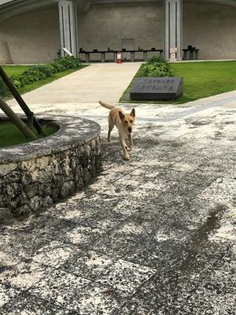
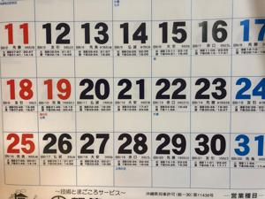

うるがいの話 ある日
最新:
野良犬
うるがいとは 前提知識です
カニの画像をクリックすると『うるがいの話』サイトを表示します

うるがい(ｳﾙｶﾞｲ urugai)とは、『もずくがに』の名前でとても大きくなります。

たながー（ﾀﾅｶﾞｰtanagaa）とは手長えびのことで、何種類かあり大きいのは車
エビぐらいになります。

ぶながー(bunagaa)とは、赤い髪の毛、赤い身体、そして身長は１ｍ２０ｃｍ
ぐらい、川の蟹を食べているの目撃された。場所は沖縄県国頭郡大宜味村のと
ある村僕の隣近所に住んでいる爺さんから、聞いた話です。
2021年07月02日 (金）野良犬
22:18


昨日の夕方、霊園で野良犬がホイホイしていた。おおお！、捕獲されなかった
のか、良かったな、ん、微妙な感情だな。梅雨明けが宣言された、まだ、曇り
空だけど。昨日の夜、のんびりタイムでテレビを見ていると、コドモから飛行
機の予約をお願いされる、え！、行くの宣言解除されないかもしれないのに、
暫く諦めたらと、言ったが諸事情があるらしい。しかたない、マイル特典を使
って指定された便の予約を取る。帰りの便の飛行機の空き状況をみると、７月
２２日と２３日が満席となっていた。おお、沖縄に来るなってヨメが言ってい
るのに！。その後、冷静になって考えると、それは特典マイルを予約枠のこと
。一般の予約枠で調べると２２日（木）の朝一便は満席で、それ以外は少し空
いていた。でも、ヨメが怒ろうが、沖縄に人は来るのだろう。ふと、机の脇に
貼ってあるカレンダーをみると、うふふ７月１９日は海の日で休日、２２、２
３日は休みでない。琉球新報社は正しい暦だったが、これは小さい会社だから
な、ま、いろいろ諸事情があるのだろう。